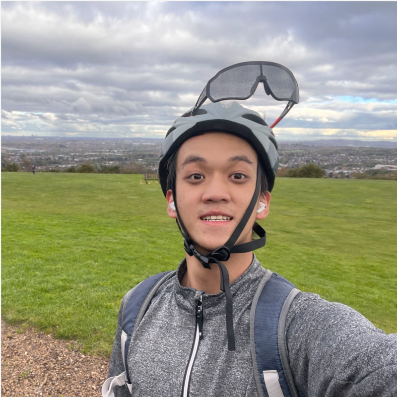
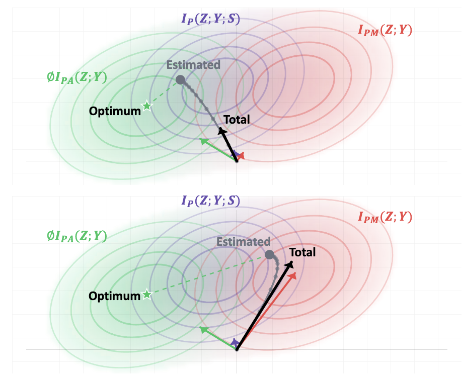
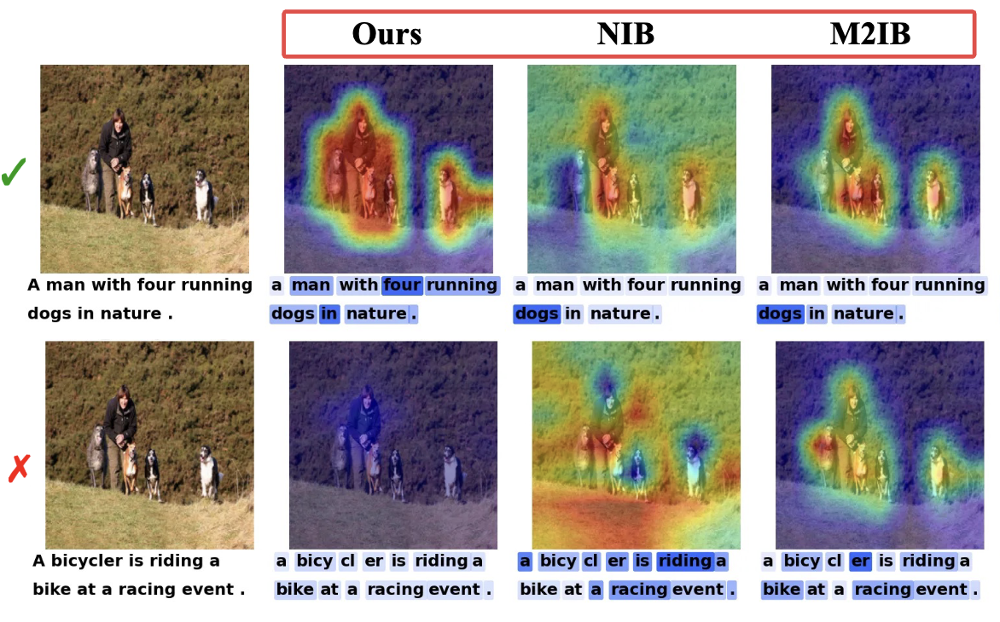
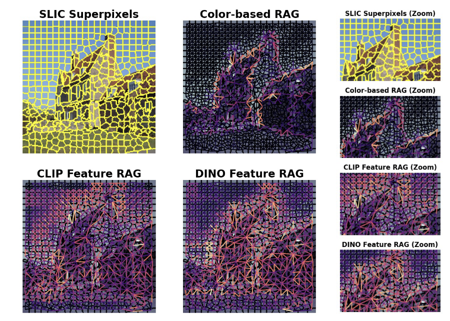
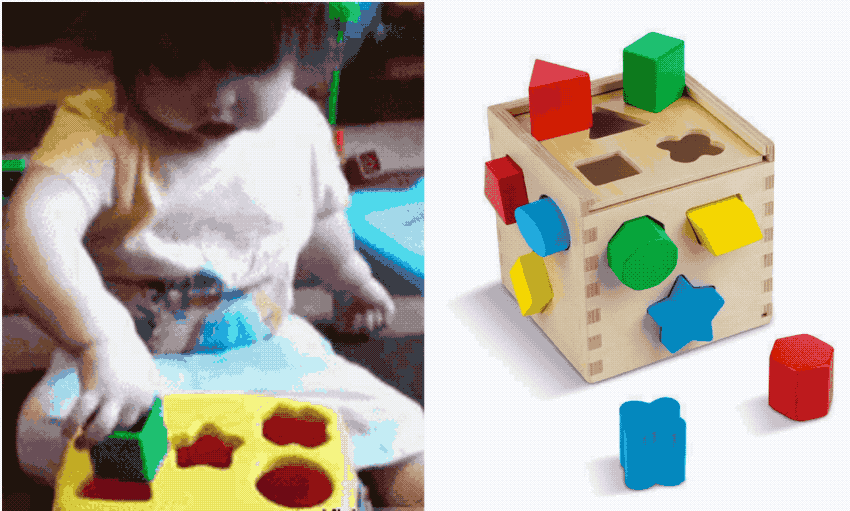

|
Qiming Huang I'm a final-year PhD student at MIx Group @ University of Birmingham, supervised by Prof. Jianbo Jiao. I obtained my B.Eng. degree in Data Science at Xi'an Jiaotong–Liverpool University in 2023. |
 |

News
- 2026-11: Will visit
VGG, Oxford University to work with Prof. João F. Henriques on robotic planning.
- 2026-09: One paper about multimodal attribution is accepted to 2026! See you in Australia! 🦘 🇦🇺
- 2026-07: Will join
Durham University as Visiting Researcher with Prof. Hubert P. H. Shum.
- 2026-05: Glad to be recognised as an ICML 2026 Gold Reviewer.
- 2025-11: One paper about training-free open-vocabulary semantic segmentation is accepted to WACV2026. See you in Tucson! 🌵 🇺🇸
- 2025-09: Will start internship at
Samsung R&D Institute UK (SRUK).
- 2025-07: Two papers are accepted to BMVC, congrats to the co-authors!
- 2025-05:
We are organising the BinEgo-360 Workshop and Challenge at ICCV 2025 in Hawaii. Please participate in the Challenge to get various awards, and join us to present your papers! See you in Hawaii! 🌺 🇺🇸 - 2025-01: One paper is accepted to ICLR2025! See you in Singapore 🇸🇬
- 2023-09: Starting my PhD at the School of Computer Science, University of Birmingham.
Research
I'm interested in open world learning problems in computer vision, focusing on the following aspects: 1) Open-world visual understanding, open vocabulary task 2) Visual Reasoning. If you are interested in open world learning, you are more than welcome to drop me an email. I am eager to brainstorm ideas related to open world learning.
|
  |
TIB: Sample-wise Tempered Information Bottleneck for Multimodal Attribution beyond Alignment Assumption
Qiming Huang, Peixi Liu, Jianbo Jiao NeurIPS 2026 TIB adapts information bottleneck attribution to each image-text pair's reliability, avoiding forced explanations when the modalities are semantically misaligned. |
|
 |
Structure-Aware Feature Rectification with Region Adjacency Graphs for Training-Free Open-Vocabulary Semantic Segmentation
Qiming Huang, Hao Ai, Jianbo Jiao WACV 2026 We use image-derived region adjacency graphs to refine CLIP features for training-free open-vocabulary semantic segmentation, reducing local noise and improving region consistency. |
|
 |
Revisit the Open Nature of Open Vocabulary Semantic Segmentation
Qiming Huang, Han Hu, Jianbo Jiao ICLR 2025 code / paper We introduce a mask-wise evaluation protocol that accounts for semantic ambiguity in open-vocabulary segmentation. |

|
Stepwise Feature Fusion: Local Guides Global
Jinfeng Wang*, Qiming Huang*, Feilong Tang*, Jia Meng, Jionglong Su, Sifan Song MICCAI 2022 code / pdf Simple but powerful baseline for medical image segmentation. |